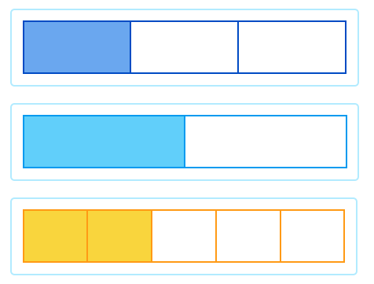
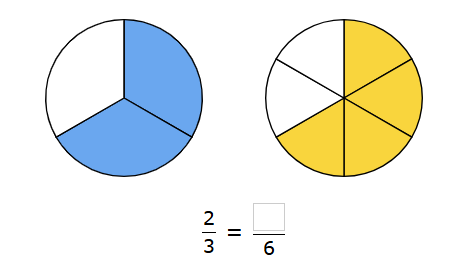
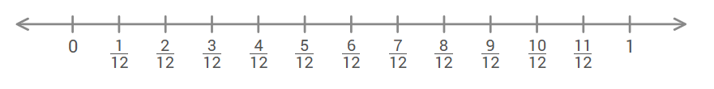
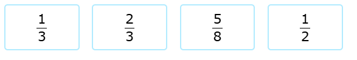
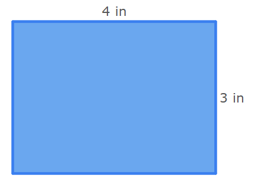
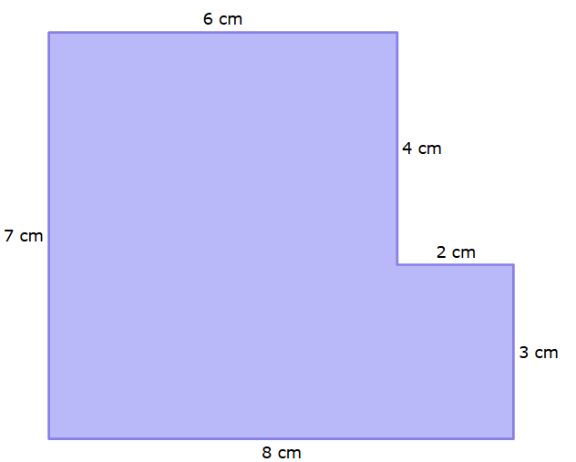
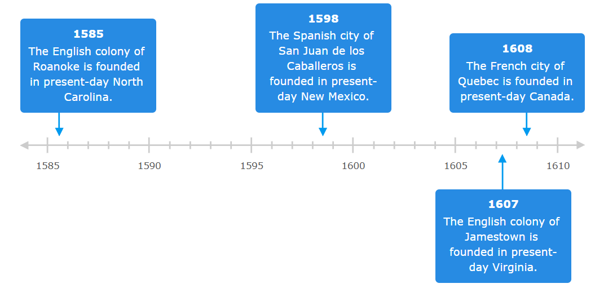
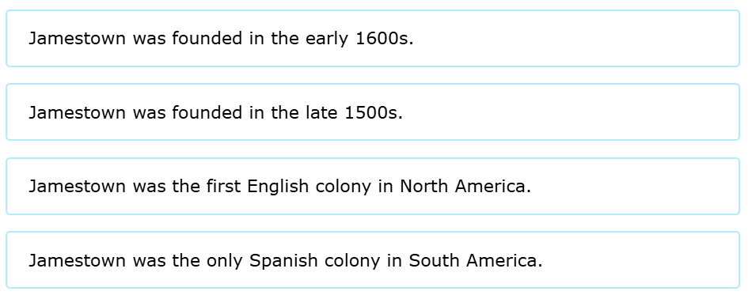
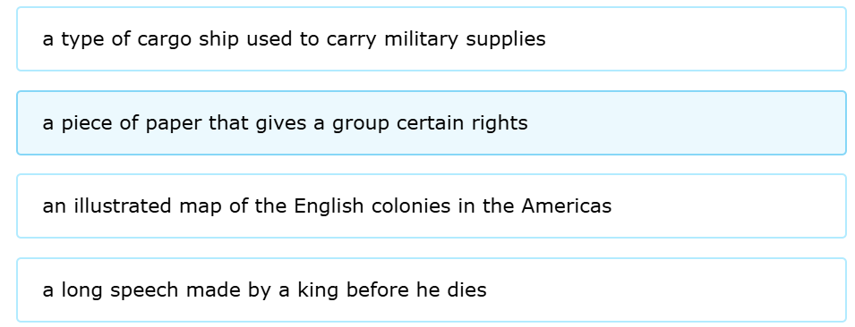

Question: Eve's class wants to give some money to the children's hospital in town. The class is planning to earn the money with a bake sale. So, Eve has baked banana bread to sell. Eve cuts the banana bread into 2 equal pieces. Which fraction model represents one piece of the banana bread?
Answer: 2
Question: Use the models to complete the equivalent fraction sentence. The colored pieces in each model show parts of the whole.
Answer: 4/6
Question: Graph 1 / 4 on the number line.
Answer: --
Question: Which fraction is equivalent to 4/6?
Answer: 2
Question: A square piece of gold has sides that are 20 millimeters long. What is the piece of gold's perimeter?
Answer: 80
Question: What is the area of this rectangle?
Answer: 12 square millimeters
Question: A square notepad has sides that are 10 centimeters long. What is the notepad's area?
Answer: 100 square millimeters
Question: What is the area of this figure?
Answer: 48 square centimeters
Question: This timeline shows when some European settlements were founded, or created. Look at the timeline. Then answer the question.
Which of these statements about Jamestown is true?
Answer: 1
Question: In 1606, King James I of England gave a charter to a group called the Virginia Company. What is a charter?
Answer: 2